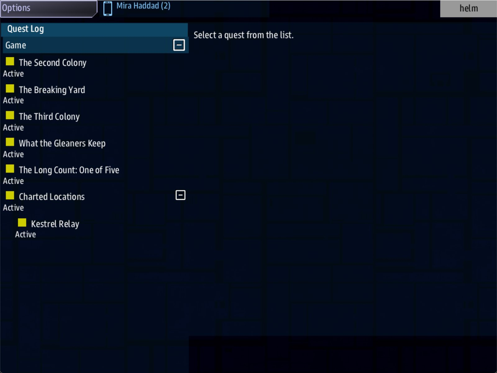

Class 6, Lecture 1 - From one session to twenty¶
What you will have at the end¶
A campaign with a name, a first evening, and a plan on one page. The crew of The Kestrel Verge gets a question that will take twenty evenings to answer: the Tern carried five boats and forty-one people, and the boats are gone. Tonight they find the first boat.
You will also have stopped a game, started it again, and written down exactly what came back. A campaign is built on that list.

Helm's Quest Log: the four Class 5 leads, and The Long Count: One of Five beside them.You write one plain page, campaign.md. You add one landmark and one lead to your
universe. Then you play one short evening twice.
The video¶
About 5 minutes. Subtitles are available in the player.
Before you start¶
- You have finished Class 5 as far as Lecture 9. Your
MyUniversemission lintsclean. - This page was written from the universe as Class 5 Lecture 5 leaves it. If you went on to Lectures 6 to 9, your file has more in it, and some chapters now live in files of their own. Nothing here depends on that. Where this page says "find the heading", find it wherever it is now, and go by the words, not by the line number.
- The game closed, and the save deleted:
C:\Cosmos\data\missions\common_data\saves\universe_save_the_kestrel_verge_1.yaml.
Words for this lecture:
| Word | Meaning |
|---|---|
| Campaign | One story played by the same crew over many evenings, in one save |
| Evening | One sitting. This class also says session. Plan for 25 to 45 minutes of play |
| Episode | What you write for one evening: a lead, a place, a thing to do, and a way home |
| Spine | The episodes in order. Each one ends by showing the next |
| Tentpole | An evening you write by hand because the story turns on it |
Step 1 - Read a campaign that shipped¶
The people who make the game built a campaign on the same machinery your universe runs on. It is called Storm's Beacon. A professor chases an ancient beacon from ruin to ruin, in a small ship that cannot win a fair fight, with something faster behind her.
You do not need its files. What matters is five decisions its makers wrote down while they built it, because every one of them is a decision you are about to make.
| What they decided | What it means for your campaign |
|---|---|
| Every episode goes round the same loop. Someone names a place. The crew goes, finds one thing out, is interrupted, gets away, and reports back | Decide your loop once. The crew learns it on evening 1 and never has to be taught again |
| Three evenings are written by hand: an opening, a midpoint and a finale. The evenings between them are made from one pattern | You do not write twenty masterpieces. You write three, and a pattern |
| Build what every episode needs once. Lock the pattern. Only then write episodes | Lectures 3 and 4 build one episode and its pattern before Lecture 5 plans the other nineteen |
| The danger never goes away. A hunter arrives if the crew stays anywhere too long | A campaign needs one pressure that is true on every evening. Yours is in Step 3 |
| One ruin has nothing in it. Not every dig is a find | Leave room for an evening where the answer is "not here" |
Two more things in their notes are worth knowing, because they are honest.
They planned seven to ten episodes. The campaign that shipped has six. And where their plan lists "an endless game for one ship, over many sessions", it says the hard part is not the machinery. It is having enough to do. Twenty evenings is a writing problem, and this class treats it as one.
Step 2 - Count what you have for one evening¶
Start your universe and look at it the way a crew does on the first night.
In the helm window, open the Quest Log. If your file is as Lecture 5 left it, four
leads are there, all of them open at once: The Second Colony, The Breaking Yard, The
Third Colony and What the Gleaners Keep.
That is right for a universe you play once. For a campaign it is the whole map handed over in the first minute. Close the game.
Three things change when the same crew comes back twenty times.
| For one evening | For twenty |
|---|---|
| Show the crew everything | Show them one lead. The next appears when this one is done |
| End the game with a win | A win ends the evening and can only happen once. It belongs to the last evening |
| What happens, happens tonight | The crew stops and comes back. Only what the game keeps is still true next week |
The third row is the one to measure, and Step 6 does.
Step 3 - Write the premise¶
The plan for a campaign is not for the game and not for the crew. It is for you. So it
does not go in kestrel_verge.amd. It goes in a plain page beside it.
In VS Code, with MyUniverse open: File, New File..., type campaign.md and press
Enter. Choose the MyUniverse folder if you are asked where.
[Not checked in a window: the exact words VS Code uses when it asks where to put the file.]
It is markdown, the kind you learned in Class 1 Lecture 4. Type this, in your own words where you have them:
# The Long Count
A campaign for The Kestrel Verge. This file is for the writer and for whoever runs the
table. It is not for the crew. The game never reads it.
## Premise
The Tern carried forty-one people and five boats. When she was found, the boats were
gone. The campaign is the count: find the five boats, then find the people.
## The pressure
The Gleaners strip every dead hull in the Verge. A boat the crew does not reach first is
a boat they find in pieces.
## The loop
Every evening goes round the same way.
1. At Kestrel Relay the crew has one lead.
2. They jump to it.
3. They find out one thing.
4. Something gets in the way.
5. They carry what they found home, and the next lead is waiting.
Then the three evenings you will write by hand. One line each is enough today.
## Three evenings written by hand
| Where | Evening | What happens |
|---|---|---|
| Opening | 1 | The Wren. The boats were launched, so somebody lived |
| Midpoint | 10 | The crew learns who bought the people, and that it was not the Gleaners |
| Finale | 20 | The fourth colony. The count is closed, one way or the other |
The finished page is in example\campaign.md. It ends with an empty table that you fill
in at Step 6.
What the tools do with this file. Nothing, and that is the point. Lint does not read it. The game does not read it. The printed documents from Class 5 Lecture 9 leave it out. All three were tried, with a page that had a heading and a fence in it shaped exactly like a record.
It is still a file in your mission folder. When you send the mission to a crew, it goes with it unless you take it out. Lecture 10 comes back to that.
Step 4 - The first lead, and the place it leads to¶
Now the part the game does read. Open kestrel_verge.amd.
Find your Landmarks chapter. Under your last landmark, with an empty line above it, add:
### [The Wren](the_wren)
---
At: 2, 2
Prefab: derelict
Terrain: asteroids
---
A lifeboat off the Tern, cold for forty years. Her davit number can still be read: one of five.
Find your Narrative chapter. Under its last record, with an empty line above it, add:
### [The Long Count: One of Five](s01_go)
---
Scope: shared
Starts when: at once
Done when: reach 2, 2
---
The Tern carried five boats and forty-one people. When the Compact found her, forty years late, every davit was empty.
A prospector has sold the Compact a fix on one boat, at (2, 2). Go and find her.
A boat that was launched had somebody in it. The Gleaners strip every dead hull in the Verge, so be there before they are.
You know every line of both from Class 5. Three things are new, and all three are habits.
The lead's text is a page. The Quest Log draws it in a text area, so an empty line between two paragraphs starts a new paragraph on screen, the way Class 1 Lecture 8 taught. Three short paragraphs here: what happened, where to go, and why tonight. The landmark's text is different. The game shows only its first line, on the card when the ship arrives, so keep a landmark to one short line.
The title starts with the campaign's name. The Quest Log is one long list. A crew that has been playing for six weeks needs to see at a glance which lines are the campaign.
The key starts with the evening's number. s01_go is session 1, the step where they
go. By Lecture 5 you will have sixty of these, and the key is how you find one.
Step 5 - Check it¶
Save both files.
Lint counts one .amd file and one .mast file. campaign.md is not in the count. (If
you split your universe in Class 5 Lecture 9, your count of .amd files is higher, and
each has its own clean.)
Lint finds the mistakes you met in Class 5: a misspelled field, a key that no record
has. Those tables are not repeated here. These three are the ones that belong to today,
and lint says clean for every one of them. Each was made on purpose, one change to the
finished files, then linted, then played.
Mistakes lint cannot see
| The mistake | What the game does |
|---|---|
The landmark and the lead name different systems: At: 2, 3 on The Wren and reach 2, 2 on the lead |
The lead is done at (2, 2), in a system with no Wren in it. Nothing is charted there. The Wren is at (2, 3), where no lead goes |
No Starts when: line on the lead |
The lead is never in the Quest Log |
A page in the folder shaped like a record: campaign.md with a three-hash heading and a fence |
Nothing. Lint and the game read only the .amd and .mast files |
So check by eye: the two numbers after At: and the two after reach are the same, and
the lead has its Starts when: line.
Step 6 - Play one evening, stop, and come back¶
This is the measurement the whole class stands on. Play a short evening, write down six things, stop the game, start it again, and look at the same six things.
- In the
commswindow, select the Hollin Compact's station. Press Hail Hollin Compact, then Pay the relay levy. That is the deed from Class 5 Lecture 4. - Select the station again and take the Escort. It is offered at 300 credits now, not 250. That is what standing 20 does.
- In the
helmwindow, open the Quest Log. Select The Long Count: One of Five and press Engage. - The ship arrives at (2, 2). The card reads The Wren, with your line.
- In the Quest Log, under Charted Locations, select Kestrel Relay and press Engage. The ship is home.
- Fill in the middle column of the table at the bottom of
campaign.md. - Close every window of the game.
- Type the same
sbs runline again. A game started this way continues the save. - Fill in the right-hand column.
What was measured, on the finished files of this lecture:
| What I checked | Before I stopped | After Continue |
|---|---|---|
| Where the ship is | Kestrel Relay, (0, 0) | The same |
| Credits | 400 | 400 |
| Standing with Hollin | 20 | 20 |
| The lead, One of Five | Done | Done |
| The job in hand | Hollin Compact: Escort, Active | The same |
| Charted Locations | Kestrel Relay, The Wren | The same |
That is a campaign's memory, and it is enough to build on.
What the game keeps, and what it does not
This is the short list. Lecture 2 has the whole one, and every row of both was measured by stopping a game and continuing it.
| The game keeps | What that means for your story |
|---|---|
| The system the ship is in | The crew starts next week where they stopped |
| The side's credits | A reward paid on evening 3 can be spent on evening 9 |
| The ship's standing with each side | A deed is remembered. Lecture 6 is built on this |
| Every step of the story: done, open, failed, or still hidden | The crew never repeats an evening, and never sees one early |
| Jobs in hand, taken or finished | A job taken tonight is still theirs next week |
| Charted Locations | Every landmark they have visited is a way back |
| A clock that is running, with the time that was left | A step with 258 seconds left came back with 275. The game writes a running clock down every half minute, so it can gain that much |
| A ship's record, when the ship is renamed | A ship renamed in settings.yaml between evenings kept its standing and its jobs |
| What the crew has learned | Lecture 2 teaches you to write a fact, and to ask for it |
| The game does not keep | What to do about it |
|---|---|
| A fleet that was not destroyed. The three ships guarding a landmark were there again after Continue | Nothing. A crew that ran away finds the guards waiting |
| The game, under a new title. A universe whose title changed started a new, empty save. The old save file was still there, unused | Choose the title before evening 1 and never change it |
Two more measured facts belong beside that table.
The save is written as things happen. A deed in a hail, a job taken and a fact learned were in the file at once. A step that failed because its time ran out was in the file within seconds, with its penalty paid, and no jump was needed. End every evening at home all the same: it is where the next lead is waiting.
The save holds the progress, and none of the story. For each step of your story it keeps the step's key and its state, and no title and no text. So a record you rewrite between evenings shows its new words next time. A record you delete is gone from the Quest Log, and its state is put aside in the save in case you put the record back. Lecture 9 is about changing a universe that a crew is halfway through, and what is safe.
Lecture 2 goes through the save itself: its file, its slots, and the facts you can ask it to keep.
If something goes wrong¶
| What you see | Likely cause |
|---|---|
| The second start is a new game: 500 credits, standing 0 | The title in story.mast changed, or the save was deleted, or New Game was chosen on the start screen |
| The story and the credits came back, and the standing and the job did not | Two ships were renamed in the same week, and the game could not tell whose record was whose. One renamed ship keeps its record |
The card at (2, 2) reads The Hollin Fields and not The Wren |
The landmark's At: is not 2, 2 |
| One of Five is not in the Quest Log | It has no Starts when: at once line, or it is not in the Narrative chapter |
| There is no Engage button | Class 5 Lecture 2: the two travel lines in story.mast |
| The game starts somewhere you did not expect | It continued an old save. Close the game and delete the save file |
Exercise¶
- Write your own premise in
campaign.md: one question that takes twenty evenings to answer. If you can answer it in one evening, it is a lead, not a campaign. - Write your pressure in one sentence. It should be true on evening 1 and on evening 19.
- Write your loop as five numbered lines. Read it aloud. Would a crew know, at any moment, which line they are on?
- Name your three tentpoles. Give the finale one line and no more. You will not write it until you know what the crew did.
- Write your first lead and its landmark, lint, and do Step 6 with your own table.
- In
settings.yaml, change the first ship's name, as you did in Class 1 Lecture 12, and continue once more. Check your six things again: all six should be as they were. Then change the name back, and delete the save.
Checkpoint¶
You are done when all five are true:
campaign.mdhas a premise, a pressure, a loop and three tentpoles.sbs lint MyUniversesaysclean.- The Quest Log shows your first lead, with the campaign's name in its title.
- You stopped a game and continued it, and your table has both columns filled in.
- You can say, without looking, two things the game does not keep.
Next¶
Lecture 2 is the save itself: where it is, how to keep two campaigns side by side, and how to make the game remember a fact of your story. Lecture 3 then takes the lead you wrote today and builds a whole evening around it. If you are in a hurry to write, Lecture 3 works straight from here, and you can come back.
Further reading¶
- Class 5 Lecture 2: the save file, its name, and Continue.
- Class 5 Lecture 4: standing, and the deed that moved it today.
README.mdin the Storm's Beacon mission, if you have it, is its players' guide. It gives away no story.
Download this lecture's finished files (a zip of its example folder).